数字子系统的物理设计（重构版）
TLDR（太长不看）
- 模板文件路径：
/work/home/limingxuan/common/SOC_CVA6/ - 修改配置文件：
config/user_define.tcl - 编写时序约束：
config/constraints_<top_module_name>.sdc, cts_constraints_<top_module_name>.sdc - 启动物理实现：
b make innovus TOP=<top_module_name> - 修改并运行脚本：
pnr/scripts/innovus_implementation.tcl - 查看结果文件夹：
pnr/<top_module_name>
1. 模板文件
我们使用开源 RISC-V CPU CVA6 作为物理实现模板示例，其文件夹路径为：
其文件夹结构为：
SOC_CVA6
├── src # Source Files
│ ├── macro # Manually drawn layout or smaller submodules
│ │ ├── <macro_name_1>
│ │ │ ├── <macro_name_1>.lef # Macro physical abstract
│ │ │ ├── <macro_name_1>.cdl # Macro netlist
│ │ │ ├── <macro_name_1>.gds # Macro layout
│ │ │ └── <macro_name_1>_tt_0p80v_25c.lib # Macro timing library
│ │ └── <macro_name_2>
│ │ └── ...
│ ├── sram # Compiler Generated SRAM
│ │ ├── sram128x46
│ │ │ ├── sram128x46.lef # SRAM physical abstract
│ │ │ ├── sram128x46.cdl # SRAM netlist
│ │ │ ├── sram128x46.gds2 # SRAM layout
│ │ │ └── ...
│ │ ├── sram128x128
│ │ │ └── ...
│ │ └── ... # other sram instances
│ └── ... # other source files
├── pnr
│ ├── scripts
│ │ ├── floorplan # floorplan stage script
│ │ │ └── ...
│ │ ├── powerplan # powerplan stage script
│ │ │ └── ...
│ │ ├── placement # placement stage script
│ │ │ └── ...
│ │ ├── clock_tree # CTS stage script
│ │ │ └── ...
│ │ ├── routing # routing stage script
│ │ │ └── ...
│ │ ├── signoff # signoff stage script
│ │ │ └── ...
│ │ ├── innovus_implementation.tcl # main implementation script
│ │ ├── init_pnr_express.tcl # init implementation script
│ │ ├── init_pnr_standard.tcl # init implementation script
│ │ └── pnr_mmmc.tcl # define MMMC constraints
│ └── Makefile
├── config
│ ├── constraints_<top_module_name>.sdc # define pre-CTS timing constraints
│ ├── cts_constraints_<top_module_name>.sdc # define post-CTS timing constraints
│ ├── global_define.tcl # define global parameters
│ └── user_define.tcl # user-specific parameters
├── Makefile # Top-level Makefile
├── ...
... # Other Folders/Files
<macro_name_1>, <macro_name_2> 是更低层级的子系统。<top_module_name> 是该数字子系统的顶层模块名称，例如 soc。
1.1 修改配置文件
根据注释修改 config/user_define.tcl 中的物理设计参数。你需要定义的参数如下：
rm_core_top：数字子系统的顶层模块名称。rm_clock_pin：顶层模块的时钟端口名称。rm_clock_period：时钟周期，单位 ns。sram_insts：SRAM 实例的名称，请在src/sram文件夹中使用sram_compiler生成对应名称的 sram 实例。macro_insts：宏单元的名称，请将对应文件（.v，.lib，.lef，.cdl）放在src/macro/<name>文件夹中，分别命名为<name>.v<name>_[ss|tt|ff]_*v_*c.lib<name>.lef, <name>.cdl。std_lib, cell_ext：选择标准单元库的阈值电压。proj(analysis_view,[setup|hold])：选择时序分析的 PVT，学术片考虑tt的两个选项即可。init_pwr_net：电源端口名称。init_gnd_net：接地端口名称。topRoutingLayer：顶层布线层。bottomRoutingLayer：底层布线层，除非布线资源紧张，否则一般使用M2。
1.2 编写时序约束
每个子模块的时序约束都需要自行编写 sdc 文件，一共需要编写两个文件，分别用于时钟树综合前的阶段和时钟树综合后的阶段。
可以分别参考 config/constraints_soc.sdc, config/cts_constraints_soc.sdc,。其中 config/constraints_soc.sdc 也会在数字子系统的逻辑综合阶段用到。
sdc 文件的更多信息详见逻辑综合中的相关章节。请将你编写的 sdc 文件命名为 constraints_<top_module_name>.sdc, cts_constraints_<top_module_name>.sdc，并放在 config/ 文件夹中。
1.3 启动 Innovus
在 SOC_CVA6 文件夹下，运行如下命令启动 Innovus。
其中 <top_module_name> 为数字子系统的顶层模块名称，例如 soc。
顶层模块名称
config/user_define.tcl 中的 rm_core_top 完全一致。
该命令会在 pnr 文件夹下生成 logs 文件夹，并在此目录下启动 Innovus。
默认读取的网表路径为 syn/<top_module_name>/<top_module_name>_postsyn.v。
如果成功运行，会弹出 Innovus GUI 界面，并且终端处于 Innvous 命令行模式，如下图所示。
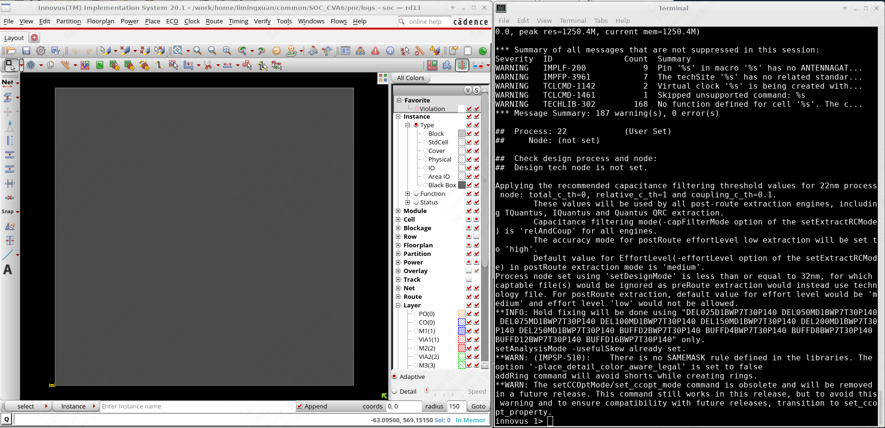
检查 Warning/Error
检查 terminal 或者 pnr/logs/<top_module_name>.log 中的 Warning 和 Error，确保初始化没有问题。
1.4 修改并运行脚本
按照 pnr/scripts/innovus_implementation.tcl 中的注释，依次修改对应的子脚本并手动运行，直到该父脚本中的所有子脚本均被运行完毕。
1.5 结果文件
物理实现完成后，会在 pnr 文件夹下生成 <top_module_name> 文件夹，其中包含了 Innovus 的结果文件，包括如下几个文件：
<top_module_name>_flat_postpnr.v：物理实现后带有电源的 flatten 网表，用于 LVS 检查。<top_module_name>_hier_postpnr.v：物理实现后没有电源的层次化网表，用于后仿。<top_module_name>_tt0p8v25c.lib：物理实现后的时序信息库，用于顶层模块集成。<top_module_name>_tt0p8v25c.sdf：物理实现后的标准延迟表，用于后仿。<top_module_name>.lef：物理实现后的版图信息，用于顶层模块集成。<top_module_name>.cdl；物理实现后的电路描述文件，用于 LVS 检查。<top_module_name>.gds2：物理实现后的版图文件。
另外，每个阶段还会生成对应的时序报告，位于 pnr/<top_module_name>/reports 文件夹中。
1.6 恢复设计
pnr/scripts/innovus_implementation.tcl 中在每一阶段结束后有 saveDesign 命令，可以将当前阶段的设计保存到 pnr/<top_module_name>/backup 文件夹中，以便后续恢复设计。
如果需要恢复某一阶段的设计，在 SOC_CVA6 文件夹下，运行如下命令。
其中 <stage_name> 为需要恢复的阶段名称，一共有 6 种选择：Floorplan, Powerplan, Place, CTS, Route, Signoff，注意大小写。
2. 物理设计流程
物理实现（后端）主要分为如下几个步骤：
- Floorplan
- Powerplan
- Placement
- Clock Tree Synthesis (CTS)
- Routing
- Signoff
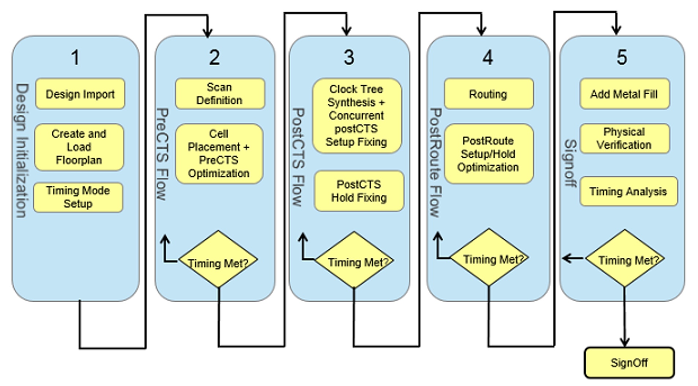
后端流程需要的数据如下：
- Timing Libaraies：
.lib文件，所有单元的时序信息。 - Physical Abstract：
.lef文件，所有单元的物理信息。 - Verilog Netlist：
.v文件，逻辑综合后的网表。 - Timing Constraints：
.sdc文件，时序约束。 - Multi-Mode Multi-Corner (MMMC) Setup for Timing：
.tcl文件，多模式多角约束。
Innovus 拥有全局 Tcl 变量，这些变量都形如 init_*，可以通过 set 命令修改。
saveDesign 命令会将这些全局变量保存到 .globals 文件中。
GUI 操作与脚本命令
所有的 GUI 操作都有对应的脚本命令，可以通过 GUI 操作后查看 pnr/logs/<top_module_name>.cmd 得到对应的脚本命令。
2.1 Floorplan
布局规划（Floorplan）决定了数字逻辑模块（soft module）的位置、尺寸和形状以及硬宏（hard macro）的放置。 布局规划包括确定整体尺寸、I/O 引脚布局、凸块（bump）分配（倒装芯片，flip chip）等。 布局规划与布局（placement）、早期全局布线（early global routing）相结合，是一个迭代设计过程。
2.1.1 查看 Floorplan
在 Innovus GUI 界面右上角选择 Floorplan View，如下图所示。
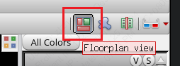
可以看到初始的版图如下所示。

中央为整个芯片的版图，分为 Core Box，IO Box 和 Die Box，如下图所示。
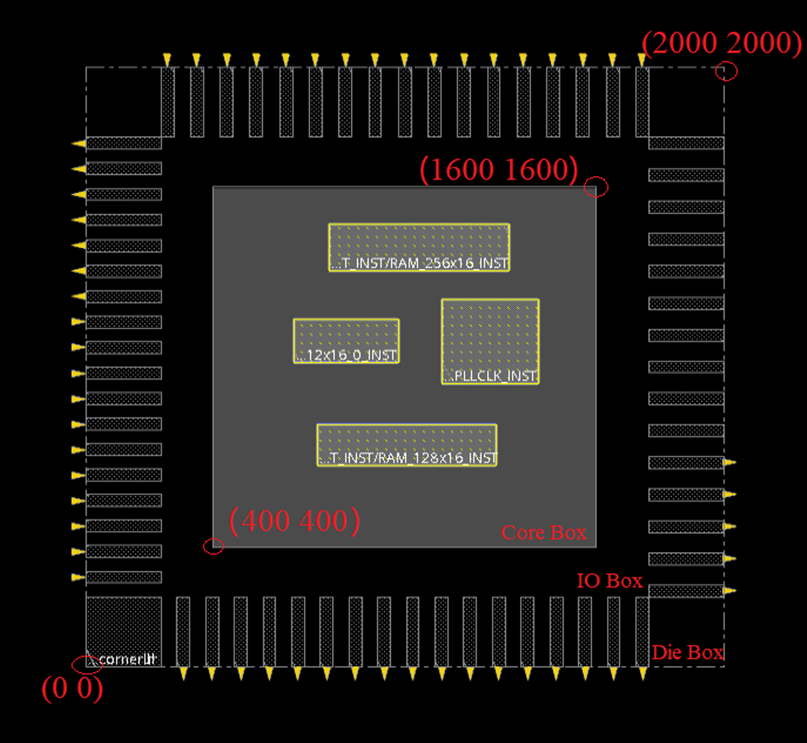
所有标准单元的宽度各不相同，但是高度均为 $cell_height（对于 22nm 工艺，即为 0.7um，pre-shrink）。
在 Core box 的四周到 I/O 管脚之间通常留有一定的间距，用于摆放 Core Ring 和 I/O 管脚布线。
除去中央的 Die Box 之外，左侧的粉色正方形为 RTL 代码中的数字顶层模块，正方形的大小表示了模块的预估面积。
TU & EU
正方形左上角 TU=64.7% 为 Target Utilization (TU)，是指所有的标准单元和 Macro 的面积除以版图的面积。
此外，还有 Effective Utilization (EU)，在整体版图面积的基础上除掉了 Placement，Routing Blockage 等其他阻碍物的面积，Innovus 默认不会显示 EU。
Die Box 右侧为该数字模块中例化的 IP 硬核（SRAM、Macro）。
检查 Macro
在这个时候可以检查此前例化的 SRAM 等 IP 是否有成功导入 Innovus。 有时因为文件路径设置错误，会出现没有成功例化的情况。
Floorplan 左侧所有 RTL 模块都拥有各自的 Floorplan 约束，可以通过在 GUI 上右键点击模块选择 Attrbite Editor -> Constraint Type（快捷键 Q）查看或者修改。
约束一共有如下几种：
None：该模块未被预放置（pre-placed）。模块的放置不受任何限制。Guide：该模块被预放置，用以引导该模块中的标准单元的摆放。Fence：该模块的标准单元必须摆放在指定的位置。Region：同 Fence 约束，同时其他模块的标准单元也可以摆放在该区域内。Soft Guide/Cluster：约束相比 Guide 更加宽松。
和左侧的 RTL 模块类似，右侧的 IP 硬核也有各自的 Floorplan 约束，可以通过右键点击 Macro 选择 Attrbite Editor -> Constraint Type（快捷键 Q）查看或者修改。
约束一共有如下几种：
unplaced：该硬核未被预放置。fixed：该硬核被预放置，不能通过自动化工具移动，但是可以通过交互指令移动。placed：该硬核被预放置，但是可以通过自动化工具或者交互指令移动。cover：该硬核被预放置，但是不能移动。softFixed：该硬核被预放置，只能在合法化的过程中被移动。
2.1.2 设置 Floorplan（pnr/scripts/floorplan/floorplan.tcl）
一般情况下，我们使用如下命令设置 Floorplan。
使用该命令设置版图大小总共需要 6 个参数，分别代表：
- 完整版图 (Die box) 的宽度。
- 完整版图的高度。
- Core box（用于摆放标准单元的版图部分）到 I/O 左侧边界的距离。
- Core box 到 I/O 底部边界的距离。
- Core box 到 I/O 右侧边界的距离。
- Core box 到 I/O 上方边界的距离。
一个初始的版图类似下图所示，设置该版图大小的命令为：floorPlan -d 100 100 10 10 10 10。

根据标准单元密度自动设置版图大小
- aspectRatio：版图的高宽比（高/宽）。
- stdCellDensity：标准单元密度，即标准单元的个数。
- Left Bottom Right Top：Core box 到 I/O 四个边界的距离。
版图的面积会由如下公式计算得到：coreArea = stdCellArea ÷ stdCellDensity + macroArea。
2.1.3 设置 Macro 别名（pnr/scripts/floorplan/macro_alias.tcl）
Macro 的名称通常比较长，为了后续脚本简洁，建议使用 Tcl 命令 set nickName realName 给 Macro 设置简短的别名，例如 set icache_data0 i_wt_dcache_i_wt_dcache_mem/gen_data_banks[0].i_data_sram。
Macro 的名称可以在 Floorplan View 中右键点击 Macro 选择 Attrbite Editor -> Name（快捷键 Q）查看。
set dcache_tag0 i_cpu/gen_cache_wt.i_cache_subsystem/i_wt_dcache/i_wt_dcache_mem/gen_tag_srams[0].i_tag_sram
set dcache_tag1 i_cpu/gen_cache_wt.i_cache_subsystem/i_wt_dcache/i_wt_dcache_mem/gen_tag_srams[1].i_tag_sram
set icache_tag0 i_cpu/gen_cache_wt.i_cache_subsystem/i_cva6_icache/gen_sram[0].i_tag_sram
set icache_tag1 i_cpu/gen_cache_wt.i_cache_subsystem/i_cva6_icache/gen_sram[1].i_tag_sram
为了便于之后对 Macro 进行批量操作，可以如下定义数组。
set dcache_tag_srams [list $dcache_tag0 $dcache_tag1]
set icache_tag_srams [list $icache_tag0 $icache_tag1]
2.1.4 摆放 Macro（pnr/scripts/floorplan/macro_preplace.tcl）
脚本命令
我们使用如下命令摆放 Macro。
instance_name：想要摆放的 Macro 名称。可以使用别名，例如：$icache_data0。location：有 X 和 Y 两个数值，分别表示 Macro 左下角的宽度方向和高度方向的坐标。[orientation]：（可选）设置 Macro 的摆放方向，可以选择R0,R90,R180,R270,MX,MX90,MY,MY90，默认为R0。
Macro 摆放方向
由于 22nm 工艺中栅极必须纵向摆放，所以在摆放 Macro 时只能选择 R0, R180, MX, MY。
GUI 操作
点击工具栏中的 Move/Resize/Reshape 图标（快捷键 Shift+R），然后单击需要移动的 Macro（使用 Shift 多选），拖动到指定位置，再单击一次即可摆放。
该图标的次级菜单可以选择是否只能水平垂直移动。
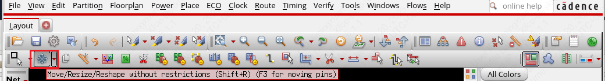
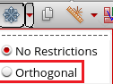
在摆放多个 Macro 时，可以使用工具栏中的 Floorplan Toolbox。
按照下图中的步骤 1，可以看到在中央视图的左上角会出现一个工具箱，选中需要操作的多个 Macro，然后点击该工具箱即可对选中的 Macro 进行对齐、等间距排列等操作。
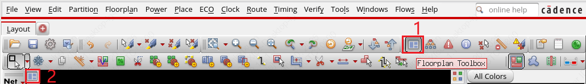
摆放完 Macro 之后，可以使用如下命令修改所有 Macro 的摆放属性。
摆放好所有 Macro 之后的版图如下所示。
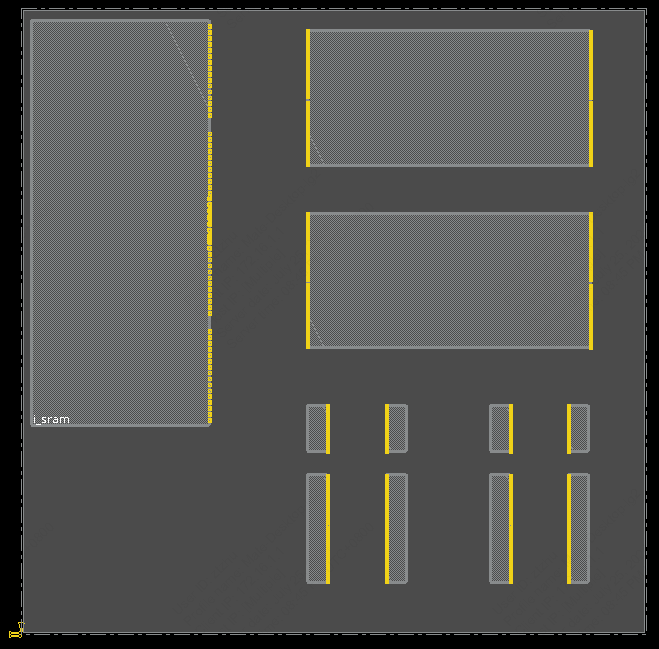
2.1.5 设置 Macro Halo 和 （可选） Placement/Routing blockage（pnr/scripts/floorplan/halo_blockage.tcl）
Halo 用于防止 Macro 四周摆放标准单元，可以减缓布线阻塞。
addHaloToBlock [list $macro_halo_spc_4 $macro_halo_spc_4 $macro_halo_spc_4 $macro_halo_spc_4] -allMacro
观察该命令可知，Halo 的宽度为 $macro_halo_spc_4。
删除 Halo
使用 deleteHaloFromBlock 命令可以删除此前摆放的 Halo。
在后端设计迭代优化时，我们往往会发现在某个区域内会出现较多 DRC 报错，布局布线密度较高。 在这种情况下，我们可以考虑手动添加 Cell placement blockage，从而限制该局部区域的布局布线密度，减少 DRC 报错。
createPlaceBlockage：设置 Cell placement blockage，用于阻碍在特定区域内标准单元的摆放。-type partial：指定该 Placement blockage 的类型，总共有 4 种类型，包括hard（默认选项，不能在指定区域摆放任何标准单元），soft（不能在布局阶段摆放标准单元，但可以在后续布局优化、时钟树综合等阶段摆放标准单元），partial（设定指定区域内标准单元的最大密度），还有macroOnly（允许摆放标准单元，但不允许摆放 Macro）。-density 75：指定了该 Partial placement blockage 所允许的最大密度，该选项一定需要和-type Partial一起使用。-box 300 50 1000 500：如下图所示，设置了该 Placement blockage 的具体范围（粉色方格区域），使用左下角和右上角的横纵坐标表示。
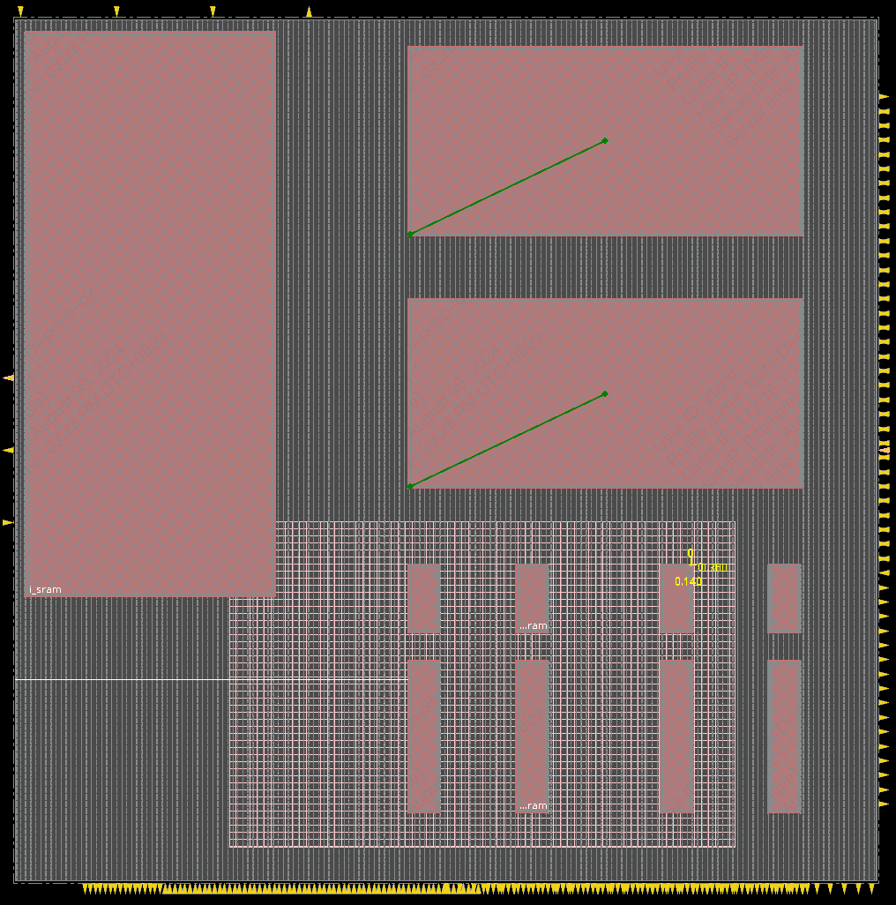
后端工具对 Macro 内部的连线情况是不清楚的，如果该模块的 .lef 文件中没有定义 OBS 层，那么就需要对该模块添加 Routing blockage，防止后端工具在该区域的布线与模块内部的走线短路。
OBS 层
OBS（Obstruction，阻挡区域）是一种用于限制布局（Placement）和布线（Routing）工具在特定区域内操作的设计约束。 其核心目的是通过人为定义“禁区”，优化芯片的物理结构、满足制造规则（DRC）、提升信号完整性或保护关键模块。
createRouteBlk -cover \
-inst $main_sram \
-exceptpgnet \
-layer {M1 M2 M3 M4} \
-spacing $macro_halo_spc
createRouteBlk 用于在指定的单元周围设置一圈 Routing Blockage，即禁止走线的区域。在此简要说明该命令几个选项的作用：
-cover：指定将在实例顶部创建与指定块实例（-inst <name>）大小相同的 Routing Blockage 区域。-exceptpgnet：指定该 Routing Blockage 不适用于 Power/Ground 的走线，仅适用于信号走线。-layer {M1 M2 M3 M4 M5 M6 M7}：指定该 Routing Blockage 适用于哪几层的金属走线。-spacing $macro_halo_spc：指定该 Routing Blockage 与周围最近的金属走线之间的最小间距，单位为微米。
Route Blockage -layer 参数
参数的设定一般为最底层金属层到 Macro 的最高层电源金属层，例如 SRAM 为 M1-M4。
2.1.6 添加 Pin（pnr/scripts/floorplan/pin_add.tcl）
对于大规模的数字模块，信号 I/O 管脚数量可能是成百上千的，手动编写命令设置每个管脚的摆放过于繁琐。 因此，我们使用 Innovus GUI 界面添加数字子系统的信号 I/O 管脚。
- 在上方工具栏选择
Edit -> Pin Editor添加相应的管脚（详见下方 Pin Editor GUI 界面）。 - 打开
pnr/logs/<top_module_name>.cmd（Innovus 生成的日志文件）查看我们在 GUI 界面每一步操作所对应的命令，其中就有我们所需要的editPin命令。
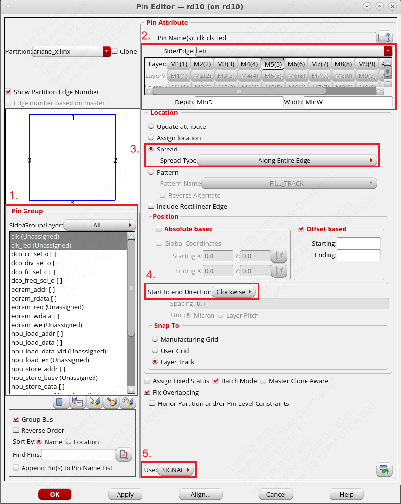
可以设想，如果管脚数量增加，例如有 2 组 64-bit 输入信号和 1 组 64-bit 输出信号，手写脚本命令过于繁琐，这也是我们在此使用 GUI 界面的原因。
关于 Pin 金属层数的选择
在常规的数字芯片中，奇数层的为横向金属，偶数层为纵向金属（常称为奇横偶纵），因此对于 Top/Bottom 可以选择 M4/M6 等金属，Left/Right 选择 M3/M5 等金属。 在管脚较多的情况下，可以将不同的管脚分配到同一条边的不同金属层。
关于数字子系统的 Power/Ground 的 Pin 管脚
数字子系统的 Power/Ground 管脚和不同信号线的管脚有所区别，往往是以顶层 1-2 层的电源网格的形式给数字子系统进行供电，因此在布局布线完成之后使用 createPGPin 命令生成，在后续步骤做进一步介绍。
添加完 Pin 后的版图如下图所示，每一个黄色的三角形代表一个 Pin 管脚，Zoom In 可以进一步看到每个管脚的名称，所在的金属层，以及管脚的具体形状 (Pin Width, Pin Depth)。

2.2 Powerplan
电源规划（Powerplan）是指在版图中规划电源和接地网络，以确保数字模块的稳定供电。 主要包括定义电源线地线（Power/Ground net）、电源格栅（Power Stripe）、电源环（Power Ring）等。
2.2.1 定义电源信号和接地信号（pnr/scripts/powerplan/global_net_connect.tcl）
我们需要定义电源信号和接地信号的名称（已经在 config/user_define.tcl 中定义），并且将其与所有标准单元、Macro 的电源和接地端口连接起来。
使用的命令如下所示：
globalNetConnect <globalNetName> {-type pgpin -pin <pinNamePattern> | -type tiehi [-pin <pinNamePattern>] | -type tielo [-pin <pinNamePattern>]} {-sinst <instName> | -all} [-override]
<globalNetName>：指定全局网络的名称，也就是我们在config/user_define.tcl定义的init_pwr_net和init_gnd_net。-type我们会用到三个选项：pgpin,tiehi,tielo，分别是 Power/Ground，1'b1，1'b0。-pin <pinNamePattern>是指定的 Instance 中 Power/Ground 管脚的名称。对于标准工艺库中的元件，是VDD和VSS；对于 SRAM/Register File Compiler 生成的 IP，是VDDCE,VDDPE和VSSE。-sinst <instName>：选择指定的 Instance 名称，与placeMacro命令中的用法类似。-all：指该命令适用于该设计中所有的 Instance，包括标准单元和 Macro。-override：指定使用globalNetConnect命令的值覆盖先前设置的全局网络连接值。
一般的数字电路中，主要包括标准单元、Macro 和上拉下拉（Tie-high，Tie-low）三种类型的电源接地连接，因此需要分别对这三类进行电源和地的连接。
-
标准单元。
-
Macro，以 SRAM IP 为例。
-
上拉下拉。
关于 Tie-high 与 Tie-low 标准单元
在数字模块中，我们有时会有类似于 assign a = 1'b1 的赋值语句。在后端流程时，这些 1'b1 与 1'b0 会转化成 Tie-high 和 Tie-low 标准单元。在定义电源信号和接地信号时，我们需要指明这些 Tie-high 和 Tie-low 标准单元和哪些电源信号和接地信号相连。
2.2.2 添加 Power ring（pnr/scripts/powerplan/power_ring.tcl）
Power ring 用来确保电源信号的稳定供电，通常是在 Core box、Macro 的四周摆放一圈电源线，一般包括 Core ring 和 Block ring。
添加 Core ring 的示例命令如下所示：
addRing -nets [list VDD VDD_SRAM VSS] \
-type core_rings \
-follow core \
-layer {top M5 bottom M5 left M6 right M6} \
-width 0.35 \
-spacing 0.35 \
-center 0
-type core_rings：指定生成的 Power rings 为 Core rings，即在 Core box 和 I/O boundary 之间的空隙生成我们指定的 Power rings（回忆在设置版图大小的时候，我们指定了在 Core box 与 I/O boundary 之间设置 3.5um 的空隙）；-nets [list VDD VDD_SRAM VSS]：指定生成的 Power rings 的信号名称。对于 Core rings，该数字子系统中所有的 P/G 信号至少需要生成一条 Core ring；-follow core：指定生成的 Core rings 以 Core boundary 为基准，如果设置-follow io，则以 I/O boundary 为基准；-layer {top M5 bottom M5 left M6 right M6}：字面意思，设置 Core rings 在每个方向所在的金属层；-width 0.35：设置每一条 Core ring 的宽度；-spacing 0.35：设置两条相邻 Core rings 之间的间距；-center 0：设置 Core rings 是否在 I/O boundary 和 Core boundary 之间的中央，在此我们不指定 Core rings 位于间隙中央，因此需要通过-offset手动设置偏移量，在没有指定offset <value>的情况下，Innovus 工具会自动设置偏移量。
添加 Core rings 之后的部分版图如下所示.

添加 Block ring 的示例命令如下所示：
addRing -nets {VDD VSS} \
-type block_rings \
-around each_block \
-layer {top M5 bottom M5 left M6 right M6} \
-width {top 0.14 bottom 0.14 left 0.7 right 0.7} \
-spacing {top 0.14 bottom 0.14 left 0.35 right 0.35} \
-offset {top 0.04 bottom 0.04 left 0.7 right 0.7} \
-center 0 \
-threshold 0 \
-jog_distance 0 \
-snap_wire_center_to_grid None
-type block_rings：指定我们在指定的 Macro 周围生成 Block rings，而非 Core rings；-nets {VDD VSS}：指定生成的 Block rings 包括 VDD 和 VSS，而不包括 VDD_CIM，因为 Block rings 用于给 Macro 周围的标准单元供电，而不用于给 Macro（例如 CIM 或 SRAM IP）供电；-around selected：指定生成的 Block rings 在选中的 Macro 周围，使用selectInst <instName>指定选中的 Macro；-threshold 0：指定相邻 Macros 周围相同 P/G 信号的 Block rings 之间所允许的最小距离，如果 Block rings 之间的距离小于这个值，两条 Block rings 会融合为一条 Block ring。在此该阈值设置为 0um，也就是 Block rings 不会自动融合。-jog_distance 0：指定 block ring 的最小微调距离，设定为 0um，即接受任意位置微调。-snap_wire_center_to_grid None：是否将 Block ring 的中心对齐到网格，设定为 None，即不对齐。-layer,-spacing,-width,-offset,-center选项的意义和作用与 Core rings 相同，不再赘述。
给特定 Macro 添加 Block ring
使用 selectInst <instName> 指定选中的 Macro，并在执行 addRing 命令时添加 -around selected 选项。
一个 SRAM IP 周围的 Block rings 如下所示。

Block Ring 的作用
Block ring 的作用是为了加强环周围标准单元的电源稳定性，因此在布局布线资源紧张的时候，可以考虑删除 block ring。
2.2.3 添加电源格栅（pnr/scripts/powerplan/power_stripe.tcl）
电源格栅（Power Stripe）是指在版图中规划电源线，一般情况下是高层金属。 Power Stripe 一次只能添加一层金属，指令如下所示。
# add M6 power stripes
setAddStripeMode -stacked_via_bottom_layer M1 \
-stacked_via_top_layer M6
addStripe -nets { VSS VDD VDD_SRAM } \
-layer M6 \
-direction vertical \
-width 2 \
-spacing 15 \
-start_offset 5 \
-set_to_set_distance 34 \
-block_ring_bottom_layer_limit M1 \
-block_ring_top_layer_limit M8 \
-padcore_ring_bottom_layer_limit M1 \
-padcore_ring_top_layer_limit M8
# add M7 power stripes
setAddStripeMode -stacked_via_bottom_layer M6 \
-stacked_via_top_layer M7
addStripe -nets { VSS VDD VDD_SRAM } \
-layer M7 \
-direction horizontal \
-width 2 \
-spacing 10 \
-start_offset 0.7 \
-set_to_set_distance 24 \
-block_ring_bottom_layer_limit M1 \
-block_ring_top_layer_limit M8 \
-padcore_ring_bottom_layer_limit M1 \
-padcore_ring_top_layer_limit M8
-stacked_via_bottom_layer M1：指定 stripe 能通过通孔连接到的最底层金属层。对于最底层的 Stripe，该值设定为 M1；对于其他的 stripe，该值一般设定为更低的一层。-stacked_via_top_layer M6：指定 stripe 能通过通孔连接到的最高层金属层。一般设定为当前层。-nets { VSS VDD VDD_SRAM }：指定 Power Stripe 的信号名称，同时这些电源/地信号会被认为是一个组（set）。-layer M6：指定 Power Stripe 的金属层。-direction vertical：指定 Power Stripe 的方向，可以选择horizontal或vertical。-width 2：指定 Power Stripe 的宽度。-spacing 15：指定一组 Power Stripe 之间的间距，即相邻电源线最相近的两条边之间的距离。-start_offset 5：指定 Power Stripe 距离版图边界的距离。-set_to_set_distance 34：指定组与组之间的间距，相邻两组对应位置之间的距离。-block_ring_bottom_layer_limit M1：指定 Power Stripe 在遇到 Block ring 时可以切换到的最底层金属层。-block_ring_top_layer_limit M8：指定 Power Stripe 在遇到 Block ring 时可以切换到的最高层金属层。-padcore_ring_bottom_layer_limit M1：指定 Power Stripe 在遇到 Pad/Core ring 时可以切换到的最底层金属层。-padcore_ring_top_layer_limit M8：指定 Power Stripe 在遇到 Pad/Core ring 时可以切换到的最高层金属层。
在实际的数字子系统中，需要根据需求灵活调整 setAddStripeMode 中的 -stacked_via_bottom_layer 参数，如下是两个实例。
为 CIM macros 供电
在该数字子系统中，CIM macro 最顶层的 P/G 网络是 M6 横向排布的 VDDC 和 VSSC Power stripes。
因此， M8 的 VDD_CIM 通过 VIA6 和 VIA7 连接到 CIM macro 内部的 P/G Pin，如下图所示。
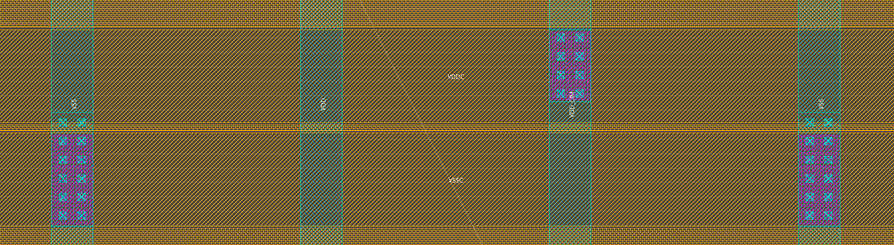
设置的指令如下。
为 SRAM IP 供电
SRAM IP 内部最顶层的 P/G 网络是 M5 横向排布的 VDDPE, VDDCE 和 VSSE。
因此，最底层的电源金属层 M6 的 VDD 通过 VIA5 连接到 SRAM macro 内部的 P/G Pin，如下图所示。

设置的指令如下。
添加全局电源格栅之后的版图如下所示。

2.2.4 电源布线（pnr/scripts/powerplan/power_route.tcl）
标准单元通过 M1 金属层供电/接地，这些供电/接地的 M1 金属被称为电源轨道（Power rail）。 需要将高层金属层的 Power Stripe 与 M1 金属层的 Power Stripe 通过贯穿多层金属的 VIA 连接起来。
sroute -connect { corePin } \
-nets { VSS VDD }
-layerChangeRange { M1 M6 } \
-crossoverViaLayerRange { M1 M6 } \
-targetViaLayerRange { M1 M6 } \
-allowJogging 0 \
-allowLayerChange 1 \
-deleteExistingRoutes
-connect { corePin }：指定连接的对象，这里是 Core Pin，即 Core box 的边界上的管脚。-nets { VSS VDD }：指定连接的信号名称。-layerChangeRange { M1 M6 }：指定可以改变的金属层范围。-crossoverViaLayerRange { M1 M6 }：指定可以穿越的金属层范围。-targetViaLayerRange { M1 M6 }：指定目标金属层范围。-allowJogging 0：是否允许走线时的弯曲。-allowLayerChange 1：是否允许金属层的改变。-deleteExistingRoutes：是否删除已有的走线。
在设置 -*LayerRange 时，需要注意顶层金属层 应为 Power stripe 中的最底层金属层。
sroute 之后 GUI 中 Macro 周围的 Violation
在执行 sroute 之后，会出现 Macro 周围的 Violation，在 GUI 中表现为白色的叉号，如下图所示。
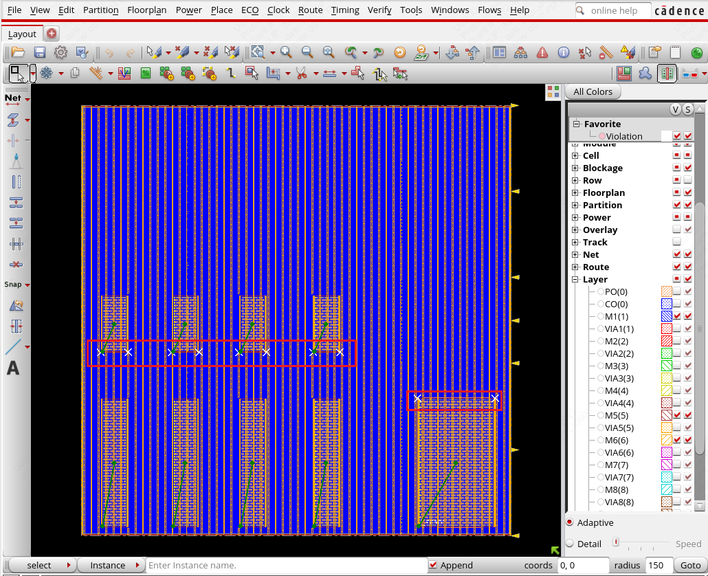
出现这种违例的原因是 M1 金属线的两端没有连接到 Power Ring 上，属于开路（open）违例。
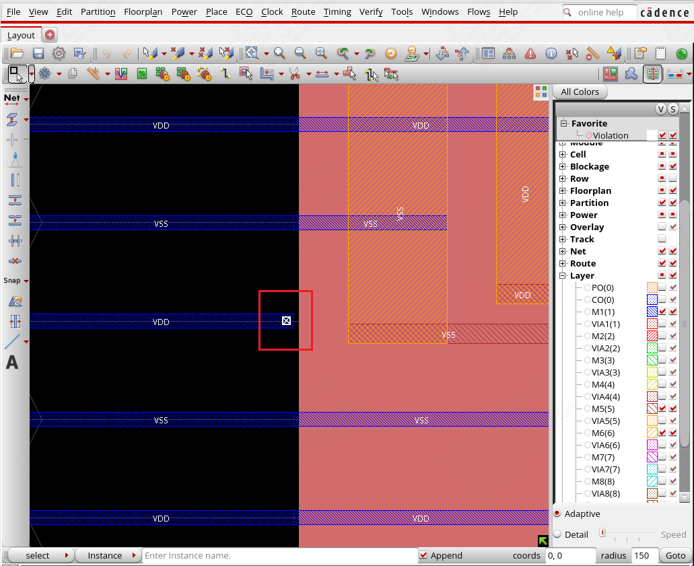
此时需要检查该 M1 金属线是否连接到了对应的纵向 VDD/VSS Power Stripe 上。 如果没有，则该金属线处于悬空状态，需要重新添加 Power Stripe。
editPowerVia 的作用
在执行 addRing, addStripe, sroute 的时候会自动插入 Via，因此单独执行 editPowerVia 在大多数情况下不会有任何效果。
电源布线之后的版图如下所示。

检查 Global Net Connection
在添加全局的 P/G 网络后，请务必注意检查最顶层 (M8) 的 P/G 有没有通过 VIA 正确连接到最底层 (M1) 以及各个 Macro 内部的 P/G 网络中。 确保每一个 Macro 的电源和地线都正确连接。
如果发现连接有误，需要及时修改 pnr/scripts/floorplan/global_net_connect.tcl 和 pnr/scripts/powerplan/power_stripe.tcl 中的相关命令，并通过查看 LEF 文件或者 Innovus GUI 界面查看 各个 Macro 内部 P/G Pin 所在的金属层。
2.3 Placement
布局遵循布局规划约束，完成标准单元、Macro 等的所有模块的摆放。
2.3.1 摆放 Physical-only Cell（pnr/scripts/placement/physical_cell_insert.tcl）
Physical-only Cell 是一种不包含任何逻辑功能的标准单元，用于填充版图中的空白区域，以满足物理特性的要求，包括 End-Cap、Well-Tap、Decap 和 Filler。
End-Cap 是预先放置的纯物理单元，用于满足某些设计规则。 在数字集成电路设计中，特别是使用自动布局布线工具时，标准单元在整个硅片区域内按行排列。 这些标准单元是设计的构建模块，包含逻辑门、触发器和其他数字电路。 当最后一个标准单元不能完美地适应行的长度时，Endcap Cells 用于填充标准单元行末端的剩余空间。 它们提供电气和物理隔离，将硅片的活动区域与周围结构（如划片线或芯片边缘）隔离开来。
添加 End-Cap Cells 之后的部分版图如下所示，可以看见在 Macro 的左侧和右侧，以及 Core box 的左侧和右侧（也就是标准单元行末端的剩余空间添加了 Endcap Cells。
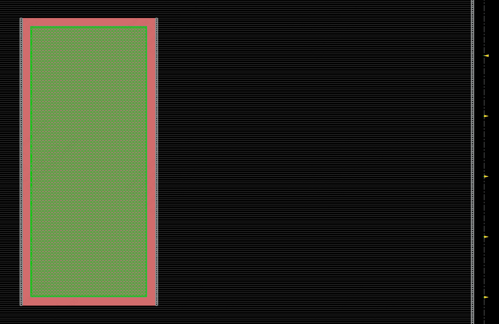
Well-Tap 为制造晶体管的衬底或阱提供低阻抗的接地或 VDD 路径，用于在 CMOS 工艺中确保适当的电气连接并防止闩锁效应。 Well-Tap Cells 在整个 IC 布局中被有规律地摆放，特别是在电源和接地连接附近。 它们的放置通常由代工厂指定的设计规则所规定。
-cell <cellName>指定所使用的 Well-Tap Cells 的名称；-cellInterval <microns>：指定每一行之间相邻两个 Well-Tap Cells 的最大距离；-checkerBoard：指定 Well-Tap Cells 以棋盘格模式放置，即每隔一行偏移半个间距。
添加 Well-Tap Cells 之后的部分版图如下所示。 可以看到在每个标准单元行，以棋盘形式交替摆放着 Well-Tap Cells。

Decap Cells（去耦电容单元）主要用于减少电源噪声和稳定电源电压。 它们通过提供额外的电容来平滑电源电压的波动，防止电源噪声影响电路性能。 Decap Cells 常放置在电源网络中，以确保电源电压的稳定性，特别是在高频信号和快速开关电路中。 Decap Cells 主要关注电源电压的稳定性，而 Welltap Cells 主要关注衬底电位的稳定性。
我们使用添加 Well-Tap 的方式添加 Decap Cells，即替换 -cell 选项为 Decap 标准单元。
放置 Decap Cells 之后的部分版图如下所示，可以看见每隔一行（因为指定了 -skipRow 1）在 Well-Tap Cells 旁边添加了 Decap Cells。
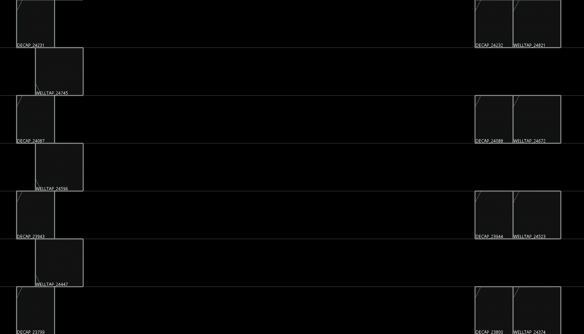
删除 End-Cap、Well-Tap 和 Decap
使用 deleteFiller -prefix ENDCAP; deleteFiller -prefix WELLTAP; deleteFiller -prefix DECAP 即可删除全部的 End-Cap、Well-Tap 和 Decap。
摆放顺序
End-Cap 应该先于 Well-Tap 和 Decap 摆放。
2.3.2 摆放标准单元（pnr/scripts/placement/stdcell_place.tcl）
deleteTieHiLo：从门级网表中删除目前摆放的 Tie-high 和 Tie-low 标准单元，将相应信号重新连接到逻辑高电平和逻辑低电平。此处可以理解为初始化操作。setPlaceMode -place_detail_preroute_as_obs {6}：限制标准单元不能摆放在已有的 M6 金属线之下。place_opt_design：基于标准单元的布局设置和相关时序分析的设置，摆放标准单元。addTieHiLo：添加 Tie-high 和 Tie-low 标准单元，在放置标准单元之后使用该命令。
在 Innovus GUI 界面右上角选择 Physical View，即可查看摆放完标准单元之后的版图。
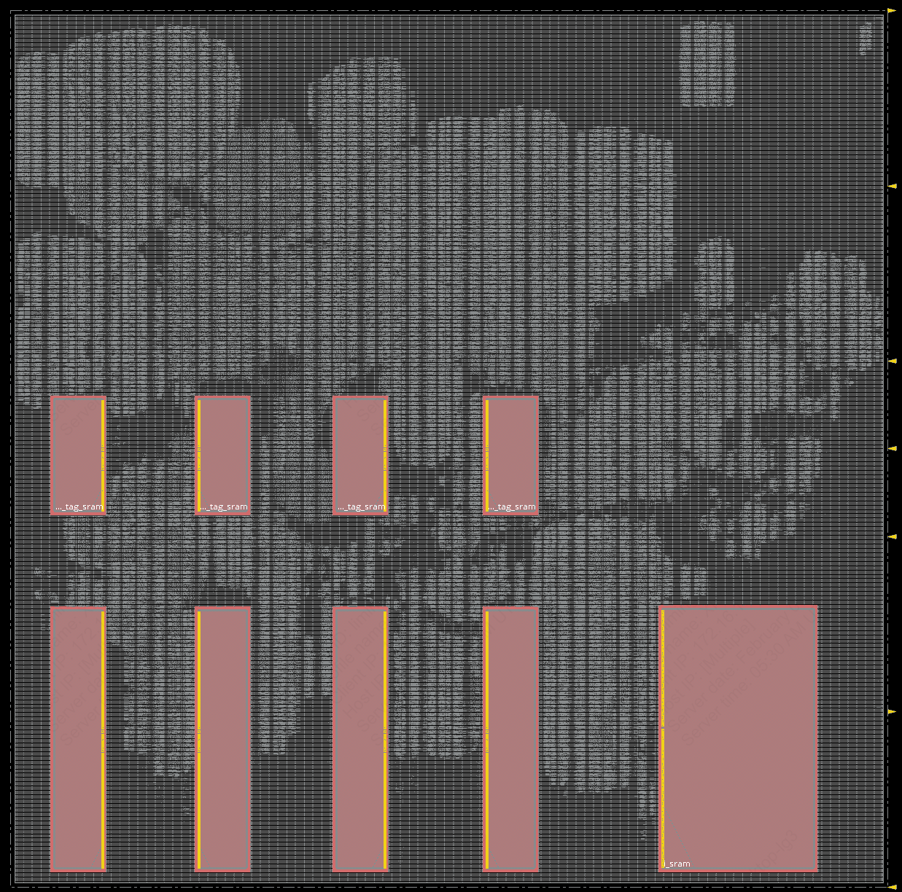
Layout 中的金属信号线
如果在 GUI 中打开各个金属层的显示，可以发现上述命令不仅仅完成了标准单元的放置，还完成了信号线的互联。
这是因为 Innovus 在进行 place_opt_design 时会自动进行预布线（preroute），将标准单元的输入输出端口连接起来。
place_detail_preroute_as_obs 作用
该选项通常选择纵向 Power Stripe 的最底层，防止最底层的 Power Stripe 通过 stacked VIA 连接到 M1 金属层时，和标准单元发生 DRC 违例。
完成标准单元的摆放之后，需要进行布局优化，以减少布局布线的阻塞、优化时序。
运行完成后，可以在 Terminal 的输出或者 pnr/<top_module_name>/postPlace/<top_module_name>_preCTS.summary 中查看时序优化的结果，请尽可能使得 裕度（slack）不为负数的情况下再进行之后的步骤。
此处的 DRC 错误可以暂时忽略，在之后的步骤中会一并修复。
修复时序
当时序不满足要求，可以依次做以下尝试：
- 多次使用
place_opt_design -incremental命令进行布局优化。 - 调整时序约束，减小时钟频率。
- 调整初始 Floorplan。
- 修改 RTL 中关键路径的逻辑。
2.4 Clock Tree Synthesis（pnr/scripts/clock_tree/cts.tcl）
时钟树综合（Clock Tree Synthesis，CTS）是指在版图中规划时钟网络，以确保时钟信号的稳定传输。 所有的触发器都由时钟信号驱动，时钟信号的传输质量直接影响到整个数字系统的稳定性和功耗。 在 CTS 之前，所有的时钟都是理想的，在引入时钟树之后，需要考虑时钟的偏移、抖动等问题。
set_interactivate_constraint_mode [all_constraint_modes -active]
source <path>/cts_constraints_<top_module_name>.sdc
set_interactivate_constraint_mode {}
create_ccopt_clock_tree_spec
ccopt_design
set_interactivate_constraint_mode [all_constraint_modes -active]
set_propagated_clock [list clk]
set_interactivate_constraint_mode {}
optDesign -postCTS -drv
optDesign -postCTS -incr
optDesign -postCTS -hold
set_interactivate_constraint_mode：用于更新 CTS 后所需的时序约束。create_ccopt_clock_tree_spec：用于自动生成时钟树。ccopt_design：对时钟树进行布局布线，并优化时序。set_propagated_clock：设置时钟信号为传播模式（propagated），用于反映时钟树的影响。optDesign：根据时序约束进行优化。-drv, -incr, -hold分别表示优化设计规则冲突（design rule violation，扇出、电容等）、渐进优化 setup（incremental）、优化 hold。
运行完成后，可以在 Terminal 的输出或者 pnr/<top_module_name>/postCTS/<top_module_name>_postCTS.summary, pnr/<top_module_name>/postCTS/<top_module_name>_hold_postCTS.summary 中查看时序（setup 和 hold）优化的结果。
此处的 setup 和 hold 可以有一定程度的违例，但还是推荐尽量减少违例（没必要确保 slack = 0）。
此处的 DRC 错误可以暂时忽略，在之后的步骤中会一并修复。
setup 和 hold
请务必确保 hold 的时序要尽可能满足要求！ 如果设计过于复杂，优先满足 hold，再尽可能减少 setup 违例。 hold 如果违例，那么最终芯片不能工作。 setup 如果过差，会导致最终芯片的频率低。
修复时序
当时序不满足要求，可以依次做以下尝试：
- 多次使用
optDesign命令进行优化。 - 调整时序约束，减小时钟频率。
- 调整初始 floorplan（减少布局密度）。
- 修改 RTL 中关键路径的逻辑。
在 GUI 中可以通过 Clock Tree Debugger 看到生成的时钟树。
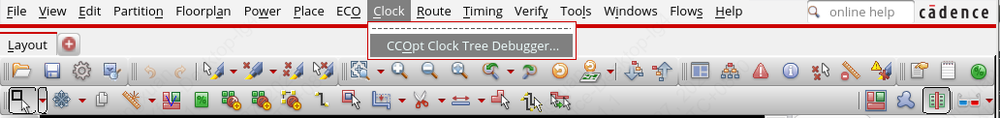
一个时钟树的实例如下。
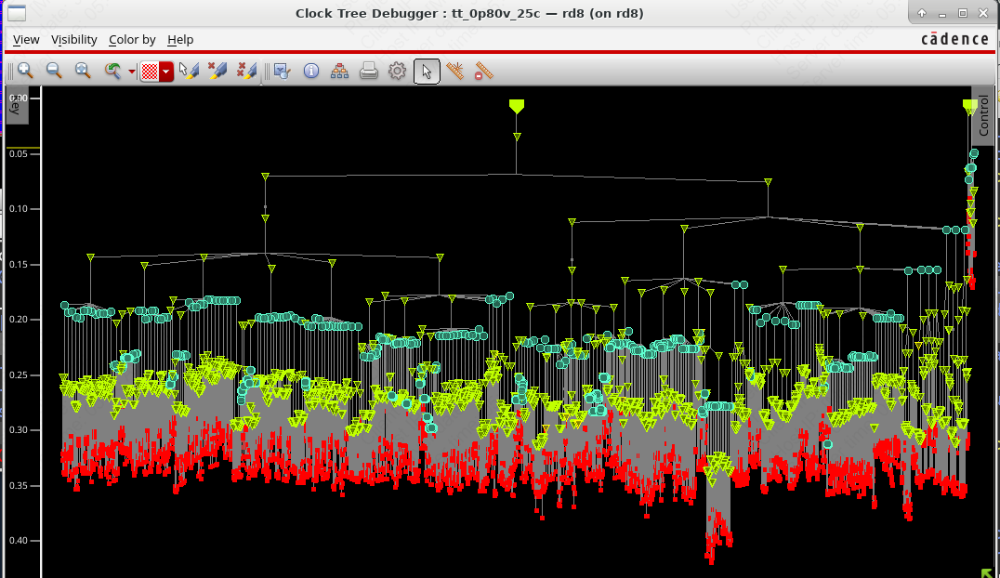
2.5 Routing
布线分为两步：全局布线（Global Route）和局部布线（Detail Route）。 另一个重要的概念是 ECO Route (Engineering Change Order)，用于在布线之后对设计进行修改，用于修复 DRC 违例。 ECO 布线包括增量式的全局和局部。 在 ECO 布线期间，会尽量保持整体布线不变，进行最小程度的更改。 除了布线，在这一阶段还需要满足时序约束、无 DRC 违例。
2.5.1 布线并收敛时序（pnr/scripts/routing/route.tcl）
setExtractRCMode -engine postRoute \
-effortLevel medium
routeDesign
optDesign -postRoute -setup -hold
optDesign -postRoute -drv
optDesign -postRoute -incr
optDesign -postRoute -hold
setExtractRCMode：设置提取 RC 模型的引擎和级别。routeDesign：进行布线，首先进行全局布线，再进行局部布线。optDesign：根据时序约束进行优化。
运行完成后，可以在 Terminal 的输出或者 pnr/<top_module_name>/postRoute/<top_module_name>_postRoute.summary, pnr/<top_module_name>/postRoute/<top_module_name>_hold_postRoute.summary 中查看布线的时序结果。
时序收敛
请确保此处的 setup 和 hold 不要违例。如果违例，请确保违例保证在 10ps 以内。
修复时序
当时序不满足要求，可以依次做以下尝试：
- 多次使用
optDesign命令进行优化。 - 调整时序约束，减小时钟频率。
- 调整初始 Floorplan（减少布局密度）。
- 修改 RTL 中关键路径的逻辑。
2.5.2 DRC 修复并检查（pnr/scripts/routing/drc_fix.tcl）
deleteRouteBlk：删除之前的布线 Blockage，以便进行 DRC 检查。setNanoRouteMode -routeWithECO true：设置 NanoRoute 的模式为 ECO。globalDetailRoute：在 ECO 模式下重新布线。verify_drc：检查 DRC 违例。
上述指令运行完成后，如果 DRC 的数量在 100 以上，说明布局布线的资源非常紧张，可以尝试需要考虑重新调整布局布线。
如果 DRC 的数量在 20-100 的区间内，可以尝试反复运行上述指令，直到 DRC 的数量少于 20。
如果 DRC 的数量在 20 以下，且都为 M1-M3 的错误，大概率这些错误是由于标准单元之间摆放地过于紧密导致。 我们可以手动调整有 DRC 违例的标准单元。
如下图所示，两个标注单元之间的 Via1 距离过近导致了 DRC，选择图中红框所示的移动工具（快捷键 Shift+R），将左侧的标准单元向左移动至少 2 格，确保标准单元之间的间隔至少为 2 格。
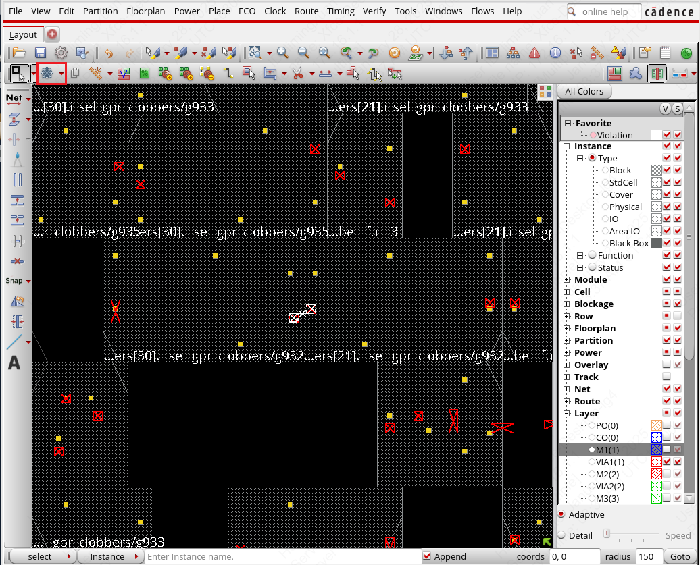
移动后的效果如下图所示。
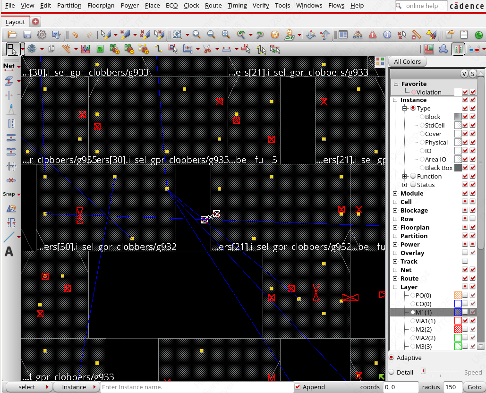
此时重新运行一遍上述的 ECO 布线命令，即可修复 DRC 违例。
DRC 约束
请确保此处的 DRC 违例数目为 0。
标准单元的移动距离
在移动标准单元时，至少需要移动2 格，留下足够的空间为后续填充标准单元之间的间隙。
2.6 Signoff
在完成布局布线并且满足时序和 DRC 约束之后，需要进行版图填充、添加电源端口、导出文件等收尾操作。
2.6.1 版图填充（pnr/scripts/signoff/filler_decap.tcl）
整个版图中没有摆放标准单元的区域称为空白区域，需要通过版图填充（Filler）填充，以保证版图的平衡性和均匀性。 我们使用 Decap 作为填充单元，进一步增强电源的稳定性。
addFiller：填充空白区域。ecoRoute -fix_drc：在填充 Filler 之后修复 DRC 违例。verify_drc：检查 DRC 违例，确保没有引入新的 DRC。
2.6.2 添加电源端口（pnr/scripts/signoff/pg_pin.tcl）
之前使用的 globalNetConnect 命令只是定义了逻辑上的电源端口，但是在版图中并没有实际的电源端口。
在 Signoff 阶段，需要添加实际的电源端口。
我们一般把最高层的 Power Stripe 作为物理电源端口。
for { set i 0 } { $i <= 32 } { incr i } {
set initX [expr 13.5 + $i *36]
set initY 0.75
set stripeHeight 1198.3
set stripeWidth 2
createPGPin VSS -geom M8 $initX $initY [expr $initX + $stripeWidth] [expr $initY + $stripeHeight]
}
for { set i 0 } { $i <= 32 } { incr i } {
set initX [expr 25.5 + $i *36]
set initY 2.15
set stripeHeight 1195.5
set stripeWidth 2
createPGPin VDD -geom M8 $initX $initY [expr $initX + $stripeWidth] [expr $initY + $stripeHeight]
}
for { set i 0 } { $i <= 32 } { incr i } {
set initX [expr 37.5 + $i *36]
set initY 1.45
set stripeHeight 1196.9
set stripeWidth 2
createPGPin VDD_SRAM -geom M8 $initX $initY [expr $initX + $stripeWidth] [expr $initY + $stripeHeight]
}
命令格式为 createPGPin <netName> -geom <layer> <x1> <y1> <x2> <y2>，其中 <x1> <y1> 和 <x2> <y2> 分别表示电源端口的左下角和右上角的坐标。
请确保电源端口的位置和大小与 Power Stripe 的位置和大小一致。
可以通过 GUI 查看最高层 Power Stripe 的位置和大小，如下图所示。
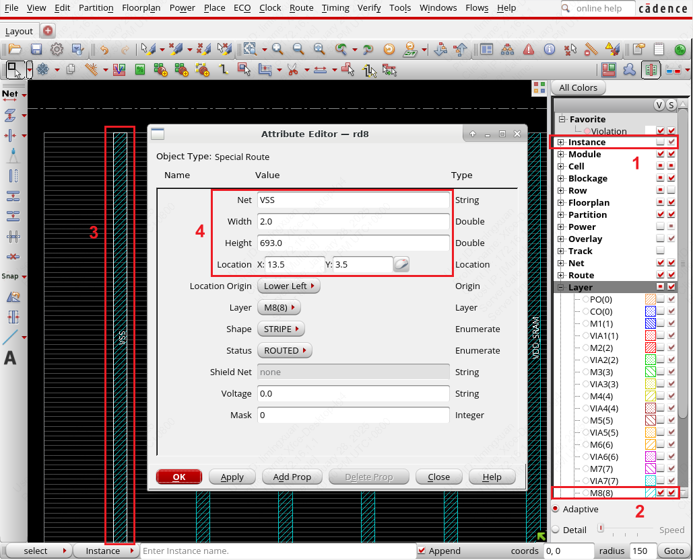
请确保所有的 Power Stripe 都添加了对应的电源端口，添加后的结果如下图所示。
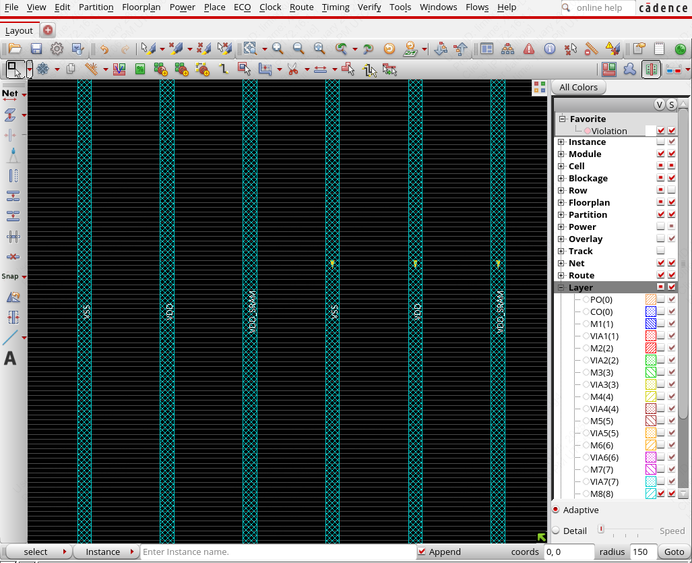
2.6.3 结果文件导出（pnr/scripts/signoff/file_gen.tcl）
直接运行pnr/scripts/signoff/file_gen.tcl 脚本即可导出 Innovus 的结果文件。
该脚本会在 pnr/<top_module_name> 文件夹下生成 Innovus 的结果文件，包括如下几个文件：
<top_module_name>_flat_postpnr.v：物理实现后带有电源（VDD, VSS 等）的 Flatten 网表，用于 LVS 检查。<top_module_name>_hier_postpnr.v：物理实现后没有电源的层次化网表，用于后仿。<top_module_name>_tt0p8v25c.lib：物理实现后的时序信息库，用于顶层模块集成。<top_module_name>_tt0p8v25c.sdf：物理实现后的标准延迟表，用于后仿。<top_module_name>.lef：物理实现后的版图信息，用于顶层模块集成。<top_module_name>.gds2：物理实现后的版图文件。
2.6.4 网表格式转换（pnr/scripts/signoff/netlist2cdl.tcl）
为了便于后续的 LVS 物理验证，需要将网表转换为 CDL（Circuit Description Language）格式。
直接运行 pnr/scripts/signoff/netlist2cdl.tcl，会在 pnr/scripts/signoff 文件夹下生成 v2lvs_run.csh 脚本文件并运行，将 Verilog 网表转换为 CDL 格式并保存为 pnr/<top_module_name>/<top_module_name>.cdl。在后续使用 Cadence Virtuoso 进行 LVS 物理验证时会用到该文件。
特别感谢 Zhantong Zhu 对本页内容的贡献和校对！